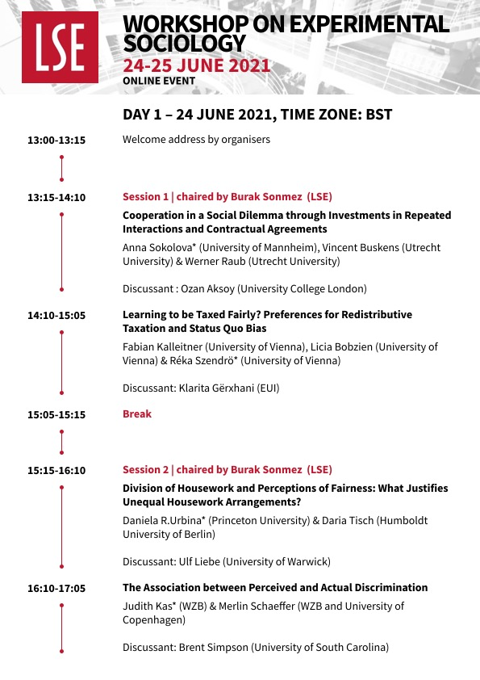
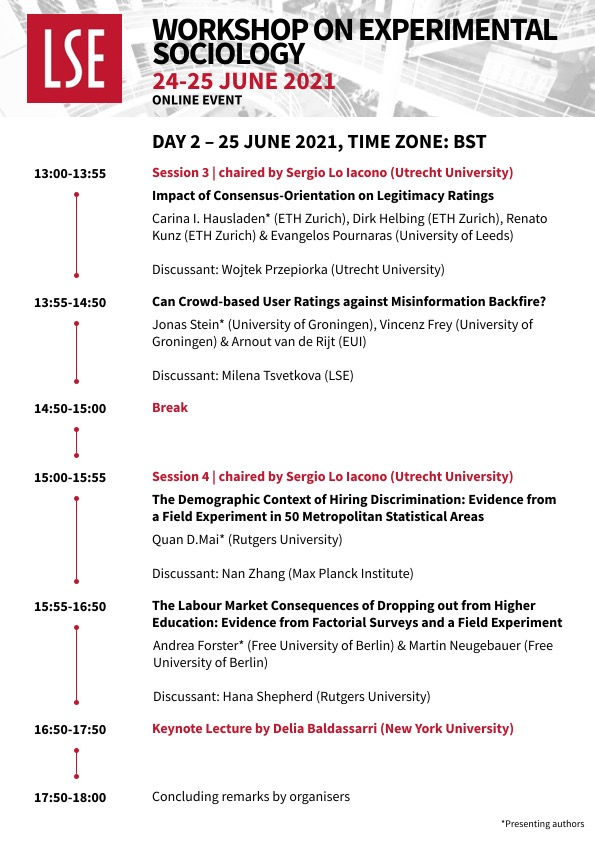
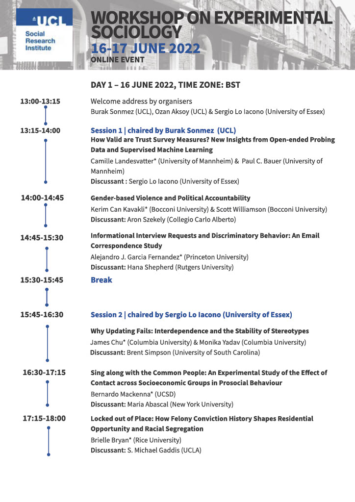
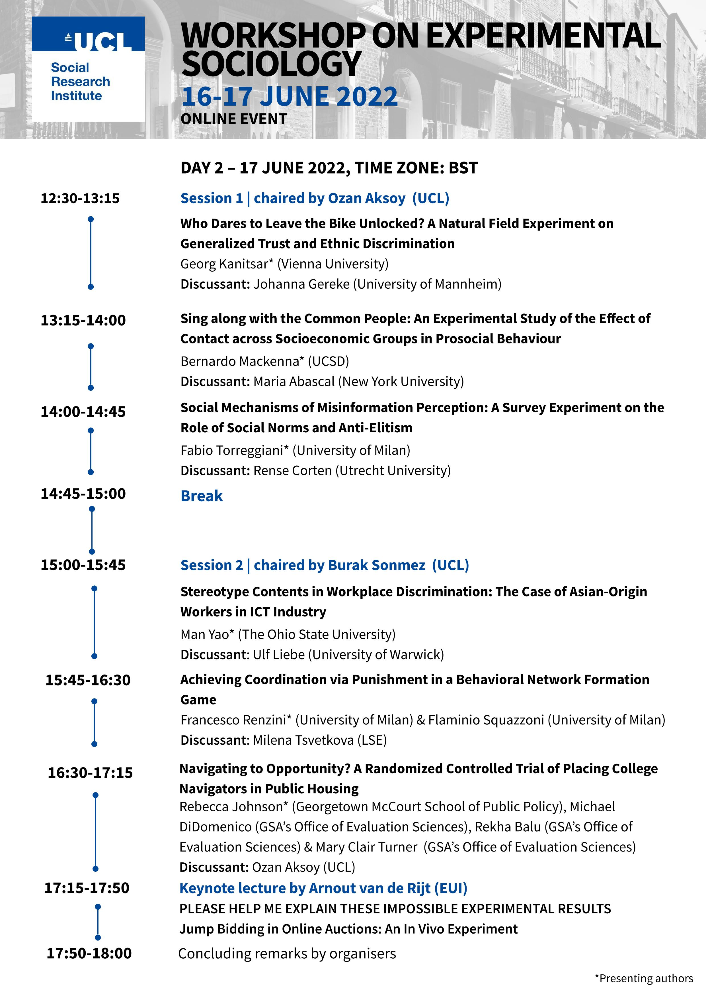
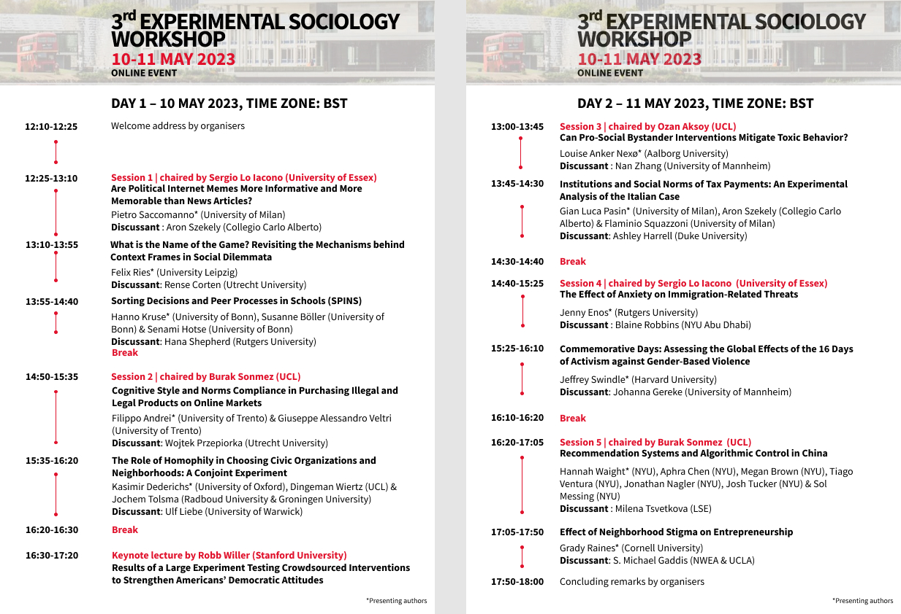

Experimental Sociology Workshop
Archive & highlights
Archive
Snapshots from previous workshops
Explore programmes, photos, and recordings from earlier editions of the Experimental Sociology Workshop.
Gallery

1st Experimental Sociology Workshop
London School of Economics

Engaged discussions
First edition highlights

2nd Experimental Sociology Workshop
University College London

Panel sessions
University College London

3rd Experimental Sociology Workshop
Community of experimental sociologists
Recording
Watch a previous workshop session.
Get involved
Bring your experiment to the next edition
Submit an extended abstract, register to join the discussions, and help expand the community of experimental sociologists.